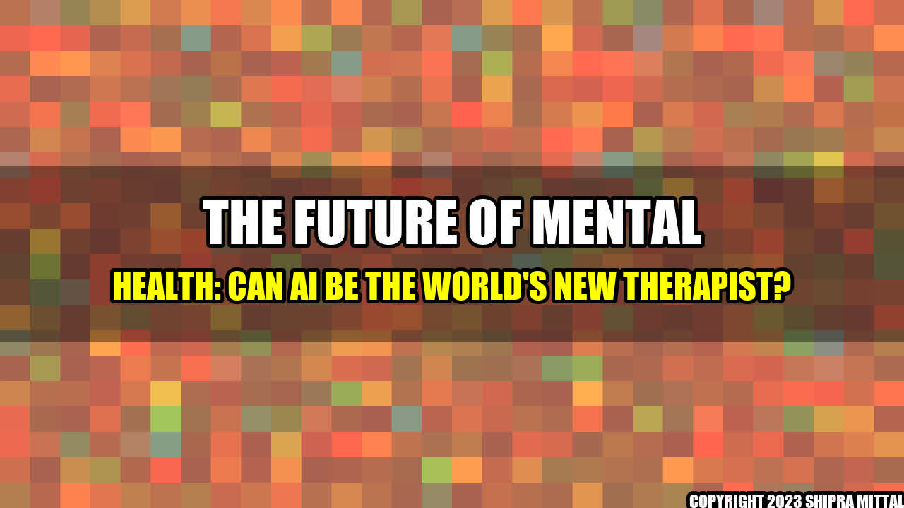

The World's New Therapist? Can AI Help with Mental Health Issues?

Imagine waking up in the middle of the night, consumed by anxiety and unable to calm down. Instead of tossing and turning, you reach for your phone and start a conversation with a chatbot. This may sound like science fiction, but for thousands of people, it's becoming a reality as AI-powered mental health apps become more accessible.
Real-life Examples
Woebot, an app that uses cognitive-behavioral therapy techniques to help people manage their mental health, has been downloaded more than a million times. Its effectiveness has been demonstrated in multiple clinical trials, and its creators say that its non-judgmental, always-available approach has helped many people overcome their fears and anxieties.
Another platform, Wysa, offers a similar service, but adds a layer of emotional intelligence to its technology. It uses machine learning to recognize patterns in user behavior and emotions, and can provide personalized suggestions and exercises based on that data.
Akash Mittal Tech Article
Share on Twitter Share on LinkedIn